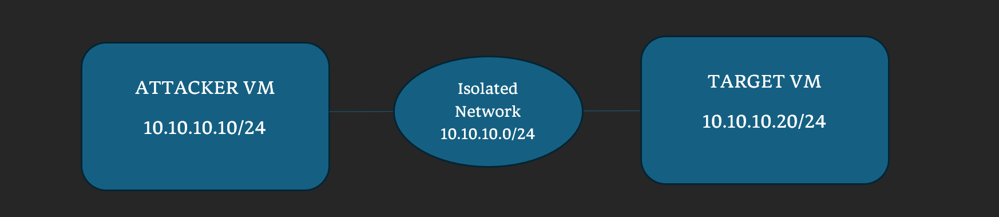

Cybersecurity Home Lab Assessment
A hands-on cybersecurity assessment conducted in an isolated virtual environment using Ubuntu, Linux networking tools, and Nmap.
Overview
This project involved building and assessing an isolated network consisting of an attacker and target virtual machine. The assessment focused on network reconnaissance, attack surface identification, host security configuration, vulnerability validation, remediation, and verification.
Objectives
- Analyze an isolated network environment
- Identify the target's attack surface
- Assess basic host security configurations
- Validate and remediate a controlled information-disclosure vulnerability
- Verify the effectiveness of remediation
Lab Architecture

Tools & Technologies
What I Practiced
- Linux network configuration and troubleshooting
- TCP and UDP reconnaissance
- Service and socket enumeration
- Basic host security assessment
- Controlled vulnerability validation
- Remediation and post-remediation verification